UDN
Search public documentation:
LightingReferenceJP
English Translation
中国翻译
한국어
Interested in the Unreal Engine?
Visit the Unreal Technology site.
Looking for jobs and company info?
Check out the Epic games site.
Questions about support via UDN?
Contact the UDN Staff
中国翻译
한국어
Interested in the Unreal Engine?
Visit the Unreal Technology site.
Looking for jobs and company info?
Check out the Epic games site.
Questions about support via UDN?
Contact the UDN Staff
ライティング参照
- ライティング参照
はじめに
Unreal Engine 3 ではワールドにライトアクタを設置してシーンやキャラクタを照明します。このライトの特質を管理する、豊富な数と種類のライトクラスや調整オプションを設置しました。このオプションを使うと、非常に単純な焼付けライトから大変複雑なダイナミックライトまで、実に多種多様な用法によるライトが提供されます。プロジェクトの要求に伴って、採択するライトの種類も変わることでしょう。このガイドでは、各ライティングのオプション間にある制限や代償を理解して最適なライト設定を選択できるよう、様々なオプションに関する解説をしています。また、特定のオプションを有効にすることで発生するパフォーマンスコストの推定についても記載しています。レガシーオプション
このページのオプションの説明は正確ですが、現在はその関連性が失われています。UE3 のライティングは既に何度も改訂されていますが、下位互換性を維持するために、古いライティングオプションのサポートを継続する必要があるのです。静的ライティングでは、 ドミナントライト を ライトマス と併用するのが最新テクニックで、オブジェクトの移動には ライト環境 が主に使われています。ライトタイプとオプションに関する概説
Global Light (グローバル ライト)プロパティ
ここでは、ライトプロパティのうち最も一般的な項目について簡潔に要約します。 Pointlight （ポイントライト）は最も一般的なライトとして使われています。全てのライトタイプに適用されないオプションにはその旨を注記しています。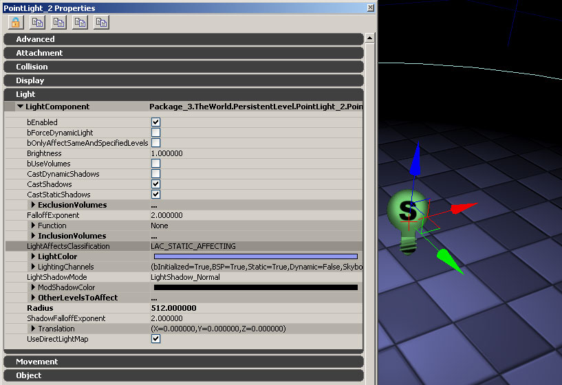
bEnabled: ここではライトのオンとオフをトグルで切り替えます。ゲームでの固定ライトのトグル変更は可能ですが、このフラグを使うと、シーンでのライトの状態を取り急ぎ確認したい場合、ライト編集中でもトグル変更できます。 bForceDynamicLight : このオプションは、ライト（ Lightmaps や ShadowMaps 以外）に関するあらゆる演算前処理を排除し、ステンシル シャドウを投影するダイナミックライトにする設定です。これは スカイライト には影響しません。ステンシル シャドウに関する詳細は、 シャドウイングリファレンスのドキュメント をご覧下さい。 bOnlyAffectSameAndSpecifiedLevels: このオプションでは、同一ストリーミングのレベルにあるアクタのみにライトが有効になります。ライトの影響をレベルごとに設定したい場合に便利な場合があります。OtherLevelsToAffect （影響させたい他のレベル）の配列でライトを影響するレベルを追加することも可能です。 Brightness（明るさ）: ライトの明るさ調整です。輝度の設定上限はありませんが、輝度があまりにも高すぎると、ライトマップ範囲に犠牲が出てしまうので、ライトマップのライトの輝度は16以下とすることをお勧めします。 bUseVolumes: ライトの影響をワールド内に配置されたボリュームの範囲内に限定することができます。ライトのボリュームに関する詳細情報は 以下 をご覧下さい。 CastDynamicShadows: ライトがダイナミックアクタを照明している場合、このフラグでライトによるダイナミックシャドウ投影の是非が決まります。この設定が False であれば、パフォーマンスは必ず向上します。この設定は、 スカイライト には影響しません。 CastShadows（シャドウの投影）: 設定を False とすると、 CastDynamicShadows（ダイナミックシャドウの投影） と_CastStaticShadows（固定シャドウの投影）_を False にします。一方、設定を True とすると、前期の２つのオプションによって、固定（静的）とダイナミックの両シャドウイングがコントロールされます。この設定は スカイライト には影響しません。 CastStaticShadows（固定シャドウの投影）: この設定で固定ジオメトリからシャドウを投影するか否かが決定します。この設定は固定フィルライトの固定シャドウイングを無効にしたい場合に有効です。これらはラインティングを擬似反射させたい場合によく使われます。この設定は スカイライト には影響しません。 ExclusionVolumes: この配列は、オプションのbUseVolumes を参照します。ライトボリュームに関する詳説は、 以下 をご覧下さい。 FalloffExponent（フォールオフ指数）: この設定ではライトのフォールオフ（輝度軽減）を修正します。デフォルトのフォールオフ値は2です。値が小さくなると、フォールオフはよりシャープになり、半径の値に達っするまで明るさが維持されます。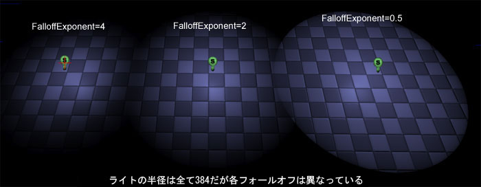
FalloffExponent（フォールオフ指数）は、 指向性ライト や スカイライト には影響しません。 Function（ 関数）: LightFunctionを使うと、エフェクトと emissive マテリアルとを一緒に使うことで、ライトの修正が可能となります。ライトの 関数に関する詳細説明は [[#LightFunctions][以下] をご覧下さい。 InclusionVolumes（含有ボリューム）: この項目はオプションであるbUseVolumesを参照します。ライトボリュームの詳細説明は 以下 をご覧下さい。 LightAffectsClassification: ライトプロパティの通常プリセットによるライトはいくつかの種類に分類されています。この分類は、 エディタ内でレベル中をあちこち作業している際に、複数タイプのライトでも容易に照明できる様に、小さなアイコン上に表示されます（例えば、上にあるフォールオフのイメージではライトアイコンにある「S」が固定ライトを示しています。）。LACに関する詳細説明は 以下 をご覧下さい。 LightColor（ライトの色）: 単にライトの色を設定します。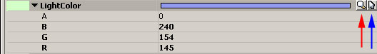
ライトの色を選択するには3つの方法があります。 1) 使いたい色のRGB値手動入力。各数値の有効範囲は0～255です。 2) カラーピッカー（赤矢印の上のボタン）の使用。 3) エディタのビューポートから色を選択。（青矢印の上のボタン）。 LightingChannels（ライティングチャンネル）: ライティングチャンネルを使って、ライトとプリミティブ間の作用を制御します。この 関数は以前の[light exclusion] の 関数に代わるものです。ライティングチャンネルに関する詳細説明は 以下 をご覧下さい。 LightShadowMode（ライトシャドウモード）: これはダイナミックシャドウに通常のシャドウイングと Modulated（モジュレート）シャドウイングのいずれを採択するかというオプションです。モジュレートシャドウでは、完全にライトマップされたサーフェスにもダイナミックシャドウを投影できます。 各種ダイナミックシャドウイングとその選択に関する詳細説明は シャドウイングのリファレンス をご覧下さい。この 関数は スカイライト には影響しません。 ModShadowColor（モジュレートシャドウ色）: モジュレートシャドウを使っている場合、ここでシャドウの色を調節します。各種ダイナミックシャドウとその選択に関する詳細説明は シャドウイングのリファレンス をご覧下さい。 OtherLevelsToAffect（その他のレベルへの影響）: このオプションでは[bOnlyAffectSameAndSpecifiedLevels]を参照します。[bOnlyAffectSameAndSpecifiedLevels] が True の場合、[OhterLevelToAffect（その他の作用レベル）]の項で追加されたレベルにもライトが作用します。 Radius（半径）: ここではライトの最大半径を設定します。半径は 指向性ライト や スカイライト には影響しません。 スポットライト では半径を使いますが、さらにコーンやフォールオフといった半径と連携する追加オプションもあります。 ShadowFalloffExponent（シャドウのフォールオフ指数）: これはフォールオフ指数と同様の設定ですが、こちらはモジュレートシャドウ用です。モジュレートシャドウとこのオプションの用法に関する詳細説明は シャドウイングのリファレンス をご覧下さい。 Translation（移動）: ここでは、光源を関連ユニットにある実在ライトアクタから移動する設定を行います。プログラマーが光源を修正できるようにするもので、内容にかかわるだけの人間がライトの移動を修正するためのものではありません。 UseDirectLightMap（ダイレクトライトマップ使用）: この設定が True の場合、ライトは照射する全ての固定プリミティブのライトマップに焼き付けられます。ライトマップはUnrealEngine3の最も簡単な種類のライティング 関数です。2006年のE3では、「Gears of War」と「UT2007」のいずれにおいても、環境内の固定パーツに対してライトマップが最も頻繁に採用されています。ライトマップとその選択に伴う代償に関する詳細説明は 以下 をご覧下さい。PointLight(ポイントライト)
 PointLight は全方向に照射するライトで、スペース内のある点から光を放射します。
アクタのブラウザには、 PointLight のクラスが3種表示されています。通常の PointLight はゲーム中の移動やトグル切り替えが行えず、つまり完全に固定です。幸いこの機能性が必要な場合に備えて、さらに２つのクラスが用意されています。
PointLight は全方向に照射するライトで、スペース内のある点から光を放射します。
アクタのブラウザには、 PointLight のクラスが3種表示されています。通常の PointLight はゲーム中の移動やトグル切り替えが行えず、つまり完全に固定です。幸いこの機能性が必要な場合に備えて、さらに２つのクラスが用意されています。
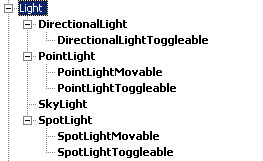
PointLightMovable(移動可能ポイントライト)
通常の PointLight と同じですが、マチネを使ったゲーム中でもライトの移動が行えるというものです。これには、PointLight をマチネのグループにして、float（浮動）のプロパティの軌道を作成します。また Kismet を使ったゲーム中に、PointLightMovable をオンオフ切り替えできます。PointLightMovable は ライトマップ を使えません。PointLightToggleable(切り替え可能なポイントライト)
通常の PointLight と同じですが、Kismet を使ったゲーム中でもオンオフ切り替えが可能です。切り替えポイントライトはゲーム中に移動することは出来ません。切り替えポイントライトは ライトマップ を使えません。Spotlight（スポットライト)
SpotLight は指向性の円錐形の光です。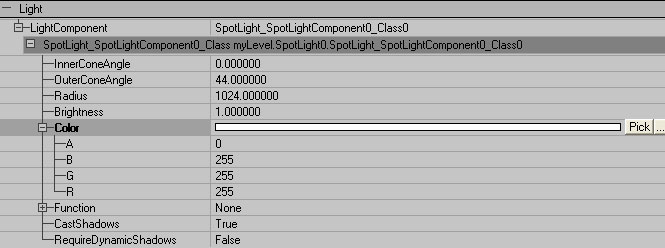
InnerConeAngle(内側コーン角度)
ここではスポットライトの中心からスポット照射域のホットスポットまでの角度を定義します。デフォルト値は1.0度で、最大値は89.0度です。 輝度はスポット照射域のホットスポット全体にわたって均一で、ライトの効果がなくなる境界に向かって徐々に暗くなります。下図をご覧下さい。上の図ではスポットライトの内側コーン角が0度で、明部（ライト効果の中心）から暗部（ライト効果の境界）に向かってスムースに明るさがグラデーションしています。下の図では SpotLight の InnerConeAngle が40度で、ライト効果の及ぶ範囲のほとんどで均一に明るく境界に近づくと急に暗くなっています。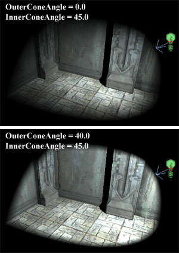
OuterConeAngle(外側コーン角度)
ここでは SpotLight の中心からライトの効果がなくなる境界までの角度を定義します。デフォルト値は44.0度で、最大値は89.0度です。 注記: OuterConeAngle が InnerConeAngle よりも小さいと、ライトはぼかしのないくっきりシャープな境界で表現されます。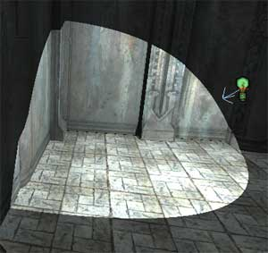
Radius(半径)
ここではスポットライトの到達距離を定義します。デフォルト値は1024.0です。 SpotLight の各プロパティが持つ関係について、以下に図解で分かりやすくご説明します。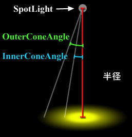
アクタのブラウザに、３種の SpotLight があります。通常の SpotLight はゲーム中の移動やトグル切り替えが出来ない、つまり完全な固定ライトです。幸いこの機能性が必要な場合に備えて、さらに２つのクラスが用意されています。SpotLightMovable(移動可能スポットライト)
通常の SpotLight と同様ですが、違いはマチネを使ってゲーム中に移動が出来るという点です。移動するには SpotLight をマチネのグループに入れてfloat（浮動）プロパティのトラックを作成します。また Kismet を使ったゲーム中に、 SpotLightMovable をオンオフ切り替えすることも可能です。 SpotLightMovable は ライトマップ を使えません。SpotlightToggleable（切り替えスポットライト)
これも通常の SpotLight と同様ですが、違いは Kismet を使ったゲーム中にオンオフ切り替えできる点です。この SpotlightToggleable をゲーム中に移動することは出来ません。SpotlightToggleable は ライトマップ を使えません。DirectionalLight(指向性ライト)
 DirectionalLight とは、特定の方向に平行光線を放つ光源です。指向性ライトは太陽光やその他の天体（月など）の光をシミュレーションします。
注記: DirectionalLight のデフォルト設定では、ライトが真下を指しています。このデフォルト角度だと、オブジェクトやそのシャドウボリュームとこのライトがZファイトを起こす可能性があります。これを回避するために、真昼であっても太陽の角度は少し傾けておくようにしてください。
アクタのブラウザに、２種の DirectionalLight があります。通常の DirectionalLight はゲーム中の移動やトグル切り替えが出来ない、つまり完全な固定ライトです。幸いこの機能性が必要な場合に備えて、もう１つのクラスが用意されています。
DirectionalLight とは、特定の方向に平行光線を放つ光源です。指向性ライトは太陽光やその他の天体（月など）の光をシミュレーションします。
注記: DirectionalLight のデフォルト設定では、ライトが真下を指しています。このデフォルト角度だと、オブジェクトやそのシャドウボリュームとこのライトがZファイトを起こす可能性があります。これを回避するために、真昼であっても太陽の角度は少し傾けておくようにしてください。
アクタのブラウザに、２種の DirectionalLight があります。通常の DirectionalLight はゲーム中の移動やトグル切り替えが出来ない、つまり完全な固定ライトです。幸いこの機能性が必要な場合に備えて、もう１つのクラスが用意されています。
DirectionalLightToggleable(切り替え指向性ライト)
これは DirectionalLight と同様ですが、違いは Kismet を使ってゲーム中にオンオフ切り替えが出来るという点です。 DirectionalLightToggleable をゲーム中に移動することは出来ません。DirectionalLightToggleable は ライトマップ を使えません。Skylight(スカイライト)
SkyLight は半球の光源で（マップの周囲や上部の半球から内方向に光っている様子をご想像下さい）、空からの散乱光をシミュレーションします。回転はできません。また、シャドウを投影しません。 ライティングチャンネル を使って、キャラクター専用のスカイライトを作成できます。これにより、比較的単純かつ容易に一定の環境光をキャラクターに当てられるため、ワールドの Pointlight のように多くのキャラクター フィルライトを配置する必要はありません。LightingChannels(ライティングチャンネル)
ライティングチャンネルは以前の [light exclusion（排他ライト）] の機能に代わって、オブジェクト別にプリミティブからのライト排除指定を行う機能を備えています。 ライティングチャンネルを使って、あらゆるライトとプリミティブの相互作用を調整できます。ライトとプリミティブでは、同じ ライティングチャンネルのオプションを共有します。 ライティングチャンネルの様子がこちらです（ LightComponent.LightingChannels にあります。) こちらは、静的メッシュに関する LightingChannels の様子です。（StaticMeshComponent.Lighting.LightingChannels の下にあります。）
こちらは、静的メッシュに関する LightingChannels の様子です。（StaticMeshComponent.Lighting.LightingChannels の下にあります。）
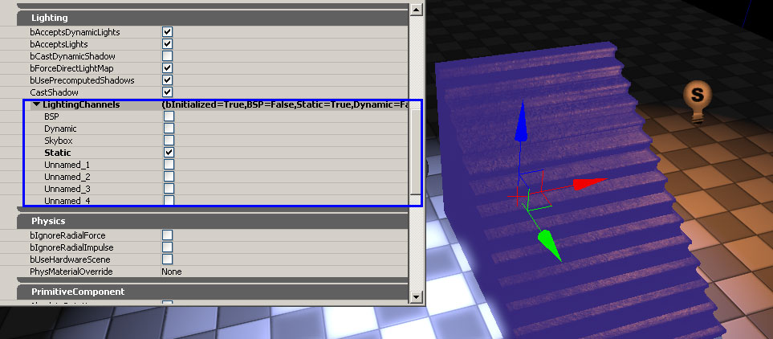
ライトとプリミティブには常に重複チャンネルがあり、ライトはプリミティブに作用します。重複チャンネルが1つでも、たとえ8つあっても問題ありません。 各ライティングチャンネルのデフォルト設定は次の通りです。 BSPはBSPチャンネルのみで修正できません。 静的メッシュのデフォルトは静的チャンネルです。 各種ダイナミックアクタ（キャラクタ、剛体、インタープリタモードのアクタなど）のデフォルトはダイナミックチャンネルです。 その他のライティングチャンネルはデフォルトでは使用されず、複数のライティング設定で有効にすることが出来ます。例えば、時折使われる方法に、無名チャンネルのひとつに木の葉を全て付加し、この無名ライティングチャンネルだけに存在するシャドウを投影しないよう設定されたレベルに指向性ライトを追加します。すると、この指向性ライトを使ってレベル内の木の葉の色修正が行えます。 ライティングチャンネルの効果を図解する次の画像をご覧下さい。この図では、左側のブルーのライトはBSPチャンネルのみに、右側のオレンジのライトはBSPと静的ライティングチャンネルの両方に属します。ここで、静的メッシュが静的チャンネルに属しているオレンジのライトによってのみ照射されている一方で、BSPフロアは両方のライトから照射されていることにご注目下さい。
LightAffectsClassification(ライト効果の分類)
ライトには新しい LightAffectsClassification が追加されています。LACはライトの LightComponent に適用するプリセットの設定群です。これにより、各ライトフラグ（例えばダイナミックシャドウの投影）をマニュアル設定するのとは異なり、次のような単純作業になります。 0) ライトを選択 1) 右クリック 2) ライト効果を設定し、メニューにあるオプション（ダイナミックオブジェクトにのみ作用、静的オブジェクトにのみ作用、ダイナミックおよび静的オブジェクトに作用）から選択 これでライトは、指定された分類のライトタイプに適したフラグに設定されます。 この少し高度な利用例は、デフォルト設定をいくつか作っておき、パフォーマンスがが操作しやすいライトであると共に、その種のライトが一般的にどのように利用されているかをご理解いただく為です。 ライトは次の群ごとに大まかに分類されました。 0) ワールドでダイナミックプリミティブに作用するライト（キャラクタ、ムーバー、車両など、飛び回る物理オブジェクト、発射物） 1) ワールドにある静的プリミティブに作用するライト（配置された静的メッシュ、配置されたBSP） 2) ワールドのダイナミックおよび静的の両プリミティブに作用するライト。 3) ユーザーが上記のいずれにも当てはまらないフラグを設定したライト。 以上の各分類は、エディタにある Light Sprite Icon （ライトスプライトアイコン）に文字で表示されます。Affects Dynamics（ダイナミックなものに作用）: D Affects Statics（静的なものに作用）: S Affects Dynamics and Static（ダイナミックと静的なものに作用）: D/S ユーザー選択: U 以下は、ライトに関する簡単なまとめです。 ライト照射方法 ライト可動性 / オンオフ 作用 Directional（指向性） Stationary（固定性） UserSelected（ユーザー選択 Point（ポイント） Toggleable（トグル切り替え） Dynamics（ダイナミック） Spot（スポット） Moveable （可動（トグル切り替えを含む）） Statics（静的） またはDynamicsAndStatics（ダイナミックかつ静的）これらの３分類は、レベルに配置されるライトのタイプに直接マップされます。 新しいLAC設定群のゴールとして名は以下のようにレベルを見てみることです。 -分類 S のライトは非常に沢山あります。これらはレベルに焼き付けるライティングであるため、基本的にはパフォーマンスコスト無しにレベルを照射できます。 -「シーン」ごとに、1～2個のDynamicAndStatic （ダイナミックかつ静的の両方）に作用するライトがあります（これらはシーンをまとめる働きをする、太陽など主な光源である指向性ライトです）。 -「エリア」ごとに小数の分類 D ライトがあり、小さな半径や円錐のライトで、柔らかな窓明かりやコンピュータースクリーンの光などに使われます。 -特に基準から遠ざかる際によく使われるいくつかの分類 U のライト。
LightFunction （ライト関数）
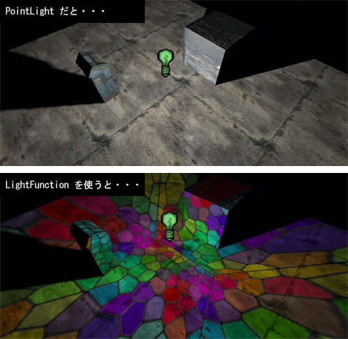
LightFunction を使うと、ライトに放射光マテリアルを使った効果を付加することができます。マテリアルの作成についての詳細は マテリアルのチュートリアル をご覧下さい。ライトの投射と同じ方法でマテリアルにライトが投射されます。PointLights（ポイントライト）は全方向に投射、SpotLights（スポットライト）はマテリアルを円錐内で投射、といった具合になります。この柔軟性の高い技術によって、ディスコのミラーボールがライトに反射するような効果からステンドグラスの窓を通した光のようなものまで、広い用途で利用できます。 注記: マテリアルに emissive(エミッシブ)コンポーネントが使われていない場合、ライトは真っ暗になります。 注記: ライト関数としてマテリアルが動作するようにするには、マテリアルプロパティにてbUsedAsLightFunction=True が設定されていなければなりません。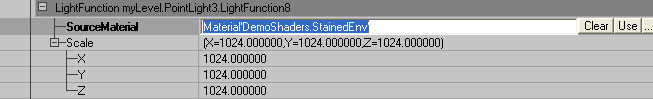
[ Function(関数)]の下にある[New（新規）]をクリックすると、２つのプロパティが表示されます。 注記: 過去においては、ライト関数は、GPU時間がかかりすぎたため省かれていました。ほとんどのコストは、ノーマルシャドウまたはアクティブなライト関数の数を基にしたオーバーヘッドです。ドミナントライトでは、すでにこのオーバーヘッドを内包しているため、ライト関数のマテリアルの追加コストのみでスクリーンへ適用できます。1つまたは2つのテクスチャでの簡単なマテリアルを持つ場合は、これを約１ミリ秒でルックアップするので、非常にコストが安いです(heightfog のレイヤー1つ、またはSSAOの3分の1くらいのコストとなります)。ノーマルライトのライト関数は、マテリアルを適用するのに１ミリ秒かかり、さらにライトごとのオーバーヘッドには約1.5ミリ秒かかります。SourceMaterial（ソースマテリアル)
これはライトに適用されるマテリアルです。 GenericBrowser （ジェネリックブラウザ）で選択し、[Use（使用）] を押します。Scale（スケール）
マテリアルをX、Y、Zの方向別にスケール（拡大縮小）できます。Lightmaps（ライトマップ)
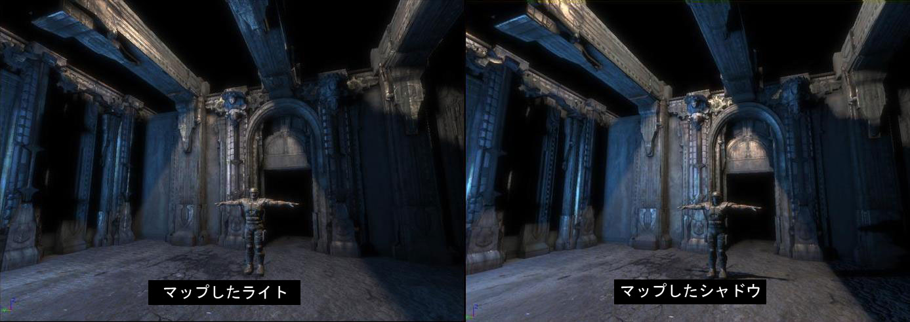
ライトマップでは、一定の格納領域とレンダリング時間を要するサーフェス上の多くのライトについて、効果を概算するために使います。Unreal Engine 3 のライトマップは、マテリアルにおいて法線マップやスペキュラーの機能も依然活用されていますが、ライティングでは3方向全体から焼き付けられます。| シャドウマップ | ライトマップ | |
| レンダリング | プリミティブに作用するシャドウマップ処理のライトについて再レンダリング | プリミティブに作用する全てのライトマップ処理されたライトはシングルパスでレンダリング |
| ストレージ | ある分割シャドウマップはプリミティブに作用するライトごとに格納 | 各プリミティブごとにひとつのライトマップを格納 |
| ダイナミックシャドウ | はい | いいえ |
LightComponent.UseDirectLightMap（ライトコンポーネント．ダイレクトライトマップ使用)
ライトの [UseDirectLightMap] が True となっていると、ライトからプリミティブに直接到達する照明がプリミティブのライトマップに格納されます。静的ライトでのデフォルト設定は True です。PrimitiveComponent.bForceDirectLightMap（プリミティブコンポーネント.b強制ダイレクトライトマップ)
プリミティブで [ bForceDirectLightMap] が True に設定されていると、プリミティブに当たる全てのライトが [UseDirectLightMap] が True と設定した状態になります。これは、ライトが最も明るくてもシャドウマップとライトマップの違いがはっきりしない場合に、プリミティブを最適化したいときに便利です。デフォルト設定は True です。LightVolumes（ライトボリューム)
LightVolume は、ライトが特定のボリューム内のアクタのみに作用するように制限したり（包含ボリューム）、ライトが作用するアクタを特定のボリュームに制限します（排他ボリューム）。このとき [bUseVolumes] （bボリューム使用）がTrueでなくてはなりません。 LightVolumes には２つの手法があり、それぞれ結果が若干異なります。 1) ライトの [bUseVolumes] が [True] で、そのボリュームが InclusionVolumes（包含ボリューム）の配列に入っているボリュームのみである場合、ライトの作用はこれらのボリュームのみに制限され、こうしたボリュームの外にあるアクタには影響しません。 2) ライトの [bUseVolumes] が True で、そのボリュームが ExclusionVolumes（排他ボリューム）の配列に入っているボリュームのみである場合、ライトはこれらのボリュームの中を除く全てのアクタに作用します。 次のサンプル画像では、PointLight の [bUseVolumes] が True となっており、[InclusionVolumes] の下にはひとつのボリュームがリストされています。このボリュームはちょうどライトの辺りにありますが、ボリュームの底部がBSPフロアの下に伸びています。ライティングをリビルドした後になって、明らかに PointLight の半径内にあるにもかかわらず、静的メッシュにライトが全く当たっていないことが分かります。ボリュームはBSPフロアの下まで到達しているため、BSPがライトの影響下に入っています。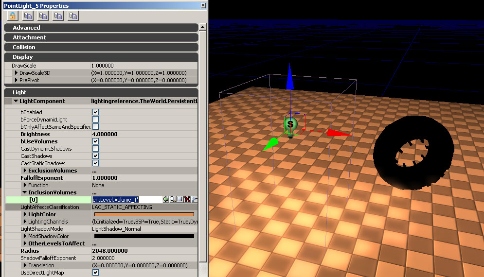
ライトボリュームはあらゆる現存の ライティングのチャンネル 設定の上に追加されます。Primitive Lighting Options(プリミティブのライティング オプション)
このガイドでは、ライトアクタ関連の設定を重点に扱っていますが、プリミティブにも重要なライティングのオプションがあります。 bAcceptsDynamicLights: ここではプリミティブがダイナミックライトをゲーム中に受け入れるかどうかを定義します。その１例がシーンを照らす銃の火光です。ゲームのダイナミックライティングを最適化するために、小さな装飾オブジェクトについてこの設定を False にする場合もあります。
bAcceptsLights: この設定をオフにすると、オブジェクトはライトを受けず、他のオプションにかかわらず一切の例外はありません。アンリットマテリアルのみを使用している静的メッシュにはこの設定を False にして下さい。
bCastDynamicShadow: この設定が True の場合、静的メッシュからダイナミックシャドウが投影されます。プレイヤーへのダイナミックシャドウ投影も含まれます。パフォーマンス上の理由で、この設定のデフォルトは False です。
bForceDirectLightMap: この設定が True の場合、対象プリミティブに作用する全てのライトはライトマップに変換されます。この手法が最もパフォーマンスに優れており、パフォーマンス上の理由で、この設定のデフォルトは True になっています。
bUsePrecomputedShadows: この設定が False の場合、静的メッシュはライティングをリビルドせずダイナミックとみなされます。また、この設定は、特殊なケースやはっきりとした目的がある場合を除き、False にしないで下さい。デフォルトは True です。
CastShadow: ここでは静的メッシュがシャドウを投影するかどうかを定義します。これが [False] の場合、CastDynamicShadows（ダイナミックシャドウの投影）をオーバーライド（上書き）します。
bOverrideLightMapResolution: この設定が True の場合、次項のフィールド（OverriddenLightMapResolution（オーバーライドされたライトマップ解像度））により、そのプロパティにある任意の静的メッシュ用に指定されたライトマップ解像度をオーバーライドします。_注：この静的メッシュのプロパティは、汎用ブラウザの静的メッシュをダブルクリックしてアクセスしたものという意味です。_この設定が False の場合、静的メッシュのデフォルトライトマップ解像度が使われます。デフォルト設定は有効です。
OverriddenLightMapResolution: が True の場合、この数が静的メッシュのライトマップやシャドウマップをレンダリングする 解像度の定義に使われます。この値が0の場合は頂点ライティングが採用されます。メモリ上の理由でデフォルト値は0です。
bAcceptsDynamicLights: ここではプリミティブがダイナミックライトをゲーム中に受け入れるかどうかを定義します。その１例がシーンを照らす銃の火光です。ゲームのダイナミックライティングを最適化するために、小さな装飾オブジェクトについてこの設定を False にする場合もあります。
bAcceptsLights: この設定をオフにすると、オブジェクトはライトを受けず、他のオプションにかかわらず一切の例外はありません。アンリットマテリアルのみを使用している静的メッシュにはこの設定を False にして下さい。
bCastDynamicShadow: この設定が True の場合、静的メッシュからダイナミックシャドウが投影されます。プレイヤーへのダイナミックシャドウ投影も含まれます。パフォーマンス上の理由で、この設定のデフォルトは False です。
bForceDirectLightMap: この設定が True の場合、対象プリミティブに作用する全てのライトはライトマップに変換されます。この手法が最もパフォーマンスに優れており、パフォーマンス上の理由で、この設定のデフォルトは True になっています。
bUsePrecomputedShadows: この設定が False の場合、静的メッシュはライティングをリビルドせずダイナミックとみなされます。また、この設定は、特殊なケースやはっきりとした目的がある場合を除き、False にしないで下さい。デフォルトは True です。
CastShadow: ここでは静的メッシュがシャドウを投影するかどうかを定義します。これが [False] の場合、CastDynamicShadows（ダイナミックシャドウの投影）をオーバーライド（上書き）します。
bOverrideLightMapResolution: この設定が True の場合、次項のフィールド（OverriddenLightMapResolution（オーバーライドされたライトマップ解像度））により、そのプロパティにある任意の静的メッシュ用に指定されたライトマップ解像度をオーバーライドします。_注：この静的メッシュのプロパティは、汎用ブラウザの静的メッシュをダブルクリックしてアクセスしたものという意味です。_この設定が False の場合、静的メッシュのデフォルトライトマップ解像度が使われます。デフォルト設定は有効です。
OverriddenLightMapResolution: が True の場合、この数が静的メッシュのライトマップやシャドウマップをレンダリングする 解像度の定義に使われます。この値が0の場合は頂点ライティングが採用されます。メモリ上の理由でデフォルト値は0です。
ライティングの再分割
Unreal Engine 2では、あらゆる静的メッシュが頂点ライティングを採用していました。低ポリゴンのオブジェクトの場合、単一頂点が細いオブジェクト（ワイヤーなど）のせいで完全に影になってしまったとき、頂点ライティングでは体裁の悪い不自然な結果となることがよくあります。 Unreal Engine 3 では、オブジェクト上のライティングのトレース（軌道）を再分割することでこの問題に対処しています。これにより目障りなシャドウのバグがなくなります。こうした設定はライティングがリビルドされたときに始めて有効になります。再分割の数が増えると、ライティングのリビルドにかかる時間も長くなります。 bUseSubDivisions: デフォルトは True です。これが False の場合、他の AdvancedLighting オプションは一切無効になります。 MaxSubDivisions（再分割最多値）: ライティングを静的メッシュについてビルドする場合の、SubDivisions の最多値を定義します。 MinSubDivisions（再分割最少値）: ライティングを静的メッシュについてビルドする場合の、SubDivisions 最少値を定義します。 SubDivisionStepSize（再分割ステップサイズ）: 再分割数はメッシュサイズ（厳密には頂点間の距離）によって左右されます。この設定は、ライティングトレースのステップ（間隔）サイズをUnreal単位で表したものです。デフォルトでは、ステップサイズは16で、非常に小さなメッシュは [MinSubDivisions] に固定され、非常に大きなメッシュは [MaxSubDivisions] で定義された数値まで再分割されます。 再分割を完全に無効にしたいというケースがいくつかあります。考えられるケースとして、モジュール式メッシュへの頂点ライティングの使用があります。以下の画像の例をご覧下さい。モジュール式壁部のライティングはどこもシームレスであるべきですが、左側の壁の大半に作用する大きなシャドウがあるため、再分割によってこのシャドウをメッシュ全体で均質処理します。これはまた、かなり解像度の低いライトマップを使用した場合、問題を解決しシャドウを維持するという極端な例です。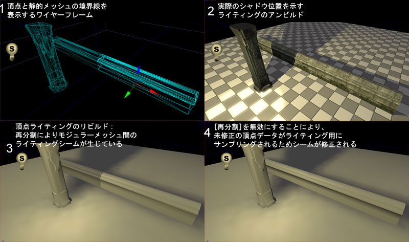